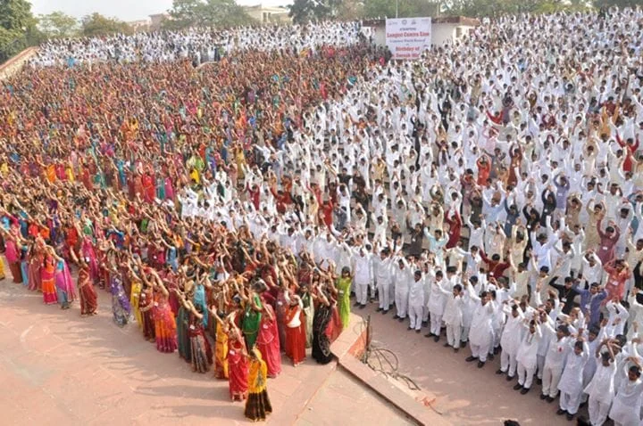
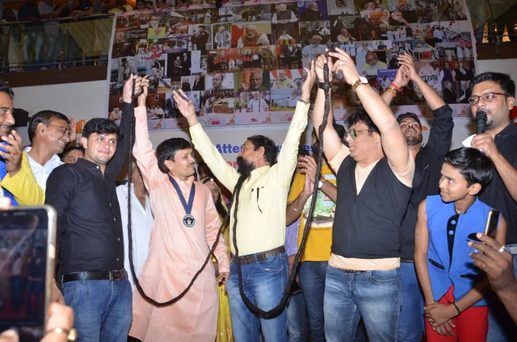
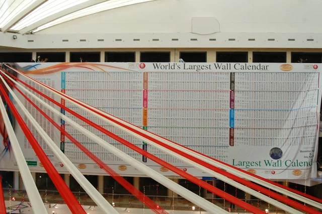
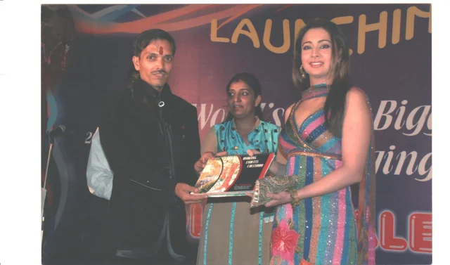
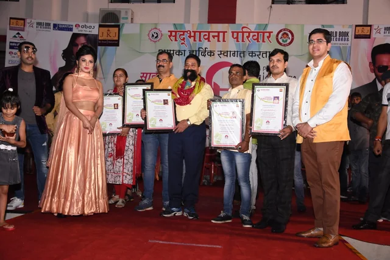
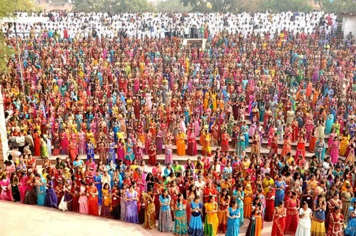
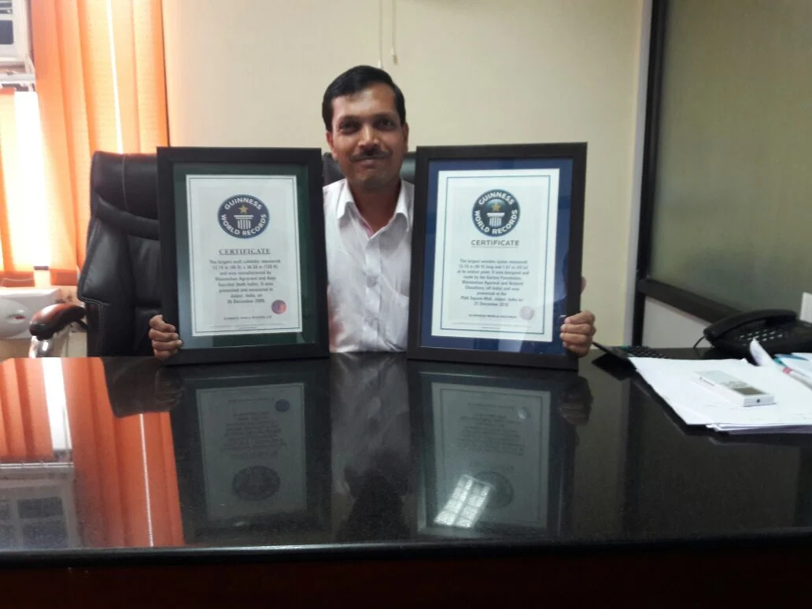
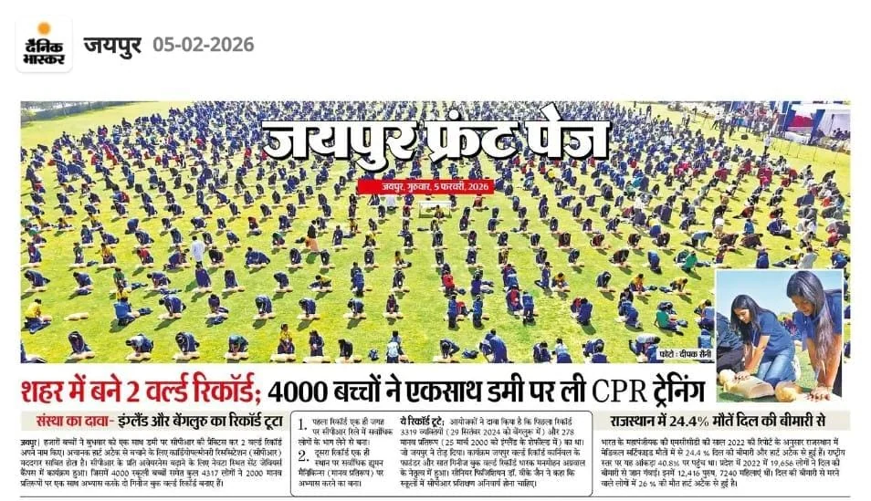
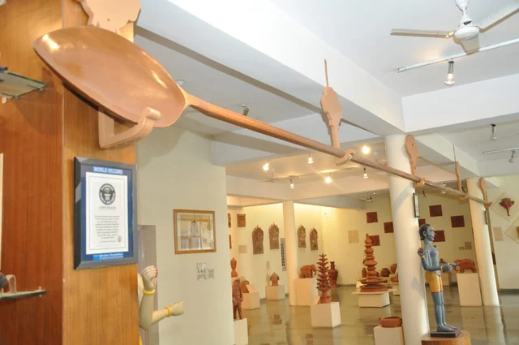
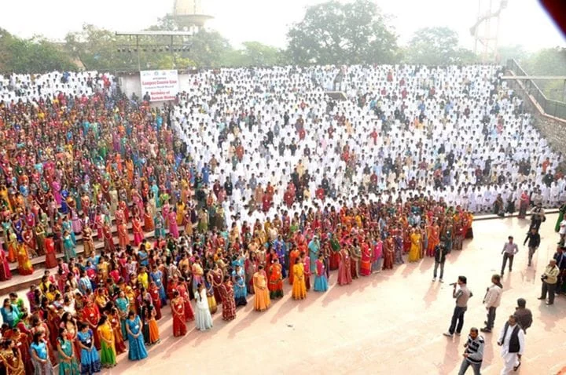

0children
The largest continuous dance performance
Synchronised for nine minutes and fifty-eight seconds.
This is not a place you visit. It is a decision — made by students, teachers, volunteers, neighbours and complete strangers, to build something none of them could have built alone.
You will not find a hero in this story. There are far too many people in it.
Nobody remembers the number.
Everybody remembers the noise.
A fair that fills a desert. A procession that closes a city. A wedding street where nobody quite remembers who was invited, and nobody was ever turned away.
Somewhere along the way, gathering became something reserved for weddings and festivals and very little else. Everything we do is an attempt to give people one more reason — and to make that reason worth the morning it costs them.

Most people will never meet the person standing beside them again. For four minutes they will trust them completely, and neither of them will find that strange.
A shared goal does something encouragement cannot. It gives ordinary effort a reason to be precise — and makes precision feel like belonging rather than pressure.
Something happens in the ten seconds afterwards. It is the only part nobody rehearses, and the only part everybody remembers.




We had been doing this for a while before anyone thought to measure it. Measuring it turned out to be the most persuasive invitation anybody has ever handed us.
A symbol that thousands of people believed in one idea on the same morning.
That schools which had never spoken to each other picked up the phone.
That strangers had become teammates by nine o’clock, without being asked twice.
That a community celebrated something it had built entirely itself.
The certificate is the receipt. The gathering was the purchase.


Every figure below was counted by somebody else, against somebody else’s rules.
Synchronised for nine minutes and fifty-eight seconds.
No image repeated. Triton Mall, Jaipur, 17 September 2018, gathered over six months.
Hand-painted, 120 ft × 40 ft.
Carved, and now displayed at the Alankar Museum, Jawahar Kala Kendra, Jaipur.
St. Xavier’s Campus, Nevta, 4 February 2026.
Copyright registered with the Government of India.
We plan, organise and document large-scale record attempts — properly, against somebody else’s rules, with somebody else’s adjudicator watching. Feasibility, paperwork, permissions, safety, stewarding, counting, evidence. All the unglamorous machinery that decides whether a morning becomes a memory or a mess. You bring the people.

Attempts built so students run them rather than attend them.

Awareness carried at a scale a pamphlet will never reach.

Where the artists are paid to teach, not booked to decorate.

Public initiatives where participation is genuine, not attendance.
Whether the idea is a record at all, and whether it can be done safely at the size you want.
The attempt is registered with the record body and the rules come back in writing.
Venue, authority, traffic, medical cover, insurance. The part nobody photographs.
Markers, stewards, timings. Most attempts are won or lost here.
Independent adjudication, stewarded counting, video and witness evidence throughout.
The file that goes back to the record body — and the photographs that go back to everyone who turned up.
Built alongside
Become part of ours. You do not need an organisation, a budget or an idea — those are the easy parts to find. No fee, no audition.